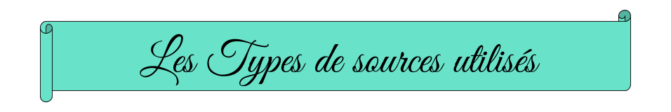

La veille technologique ou veille scientifique et technique consiste en l'acquisition systématique d'informations sur les technologies les plus récentes, notamment sur leurs nouvelles fonctionnalités dans le domaine en question. Cette activité met en œuvre des techniques d’acquisition, de stockage et d’analyse d’informations et leur distribution automatique aux différentes sections concernées de l’entreprise, à la manière d’une revue de presse. Ces informations peuvent porter sur la matière première, le produit, le composant, le procédé, l'état de l'art et l'évolution de l'environnement scientifique, technique, industriel ou commercial de l'entreprise.
Ma source principal pour ma veille technologique est le site internet Medium ayant comme tag le HTML. C'est important de se tenir informé des nouveautés qui peuvent être réalisées ailleurs sur le domaine que tu pratiques ou encore les méthodes que tu utilises.